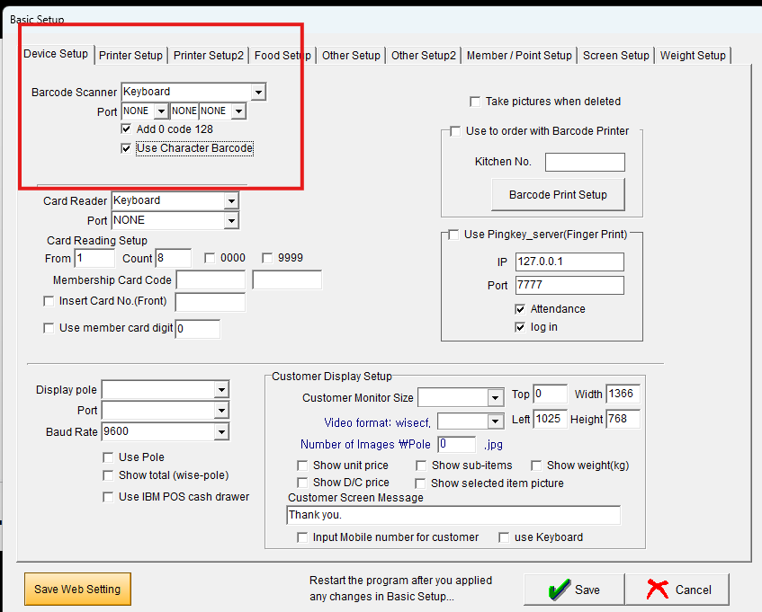
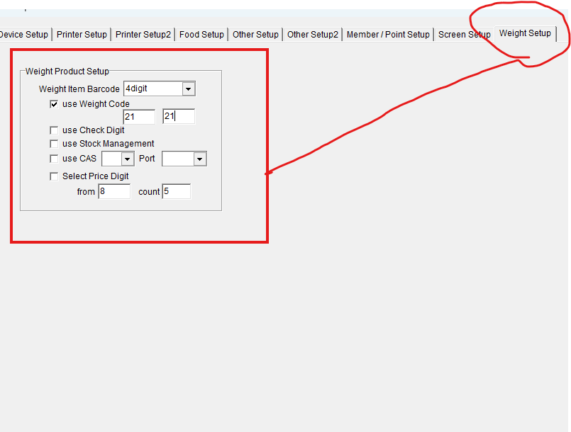

KANZI · Barcode Operations · 종합 현황
일부 상품 라벨을 매장에서 스캔하면 품목 대신 토탈세일즈 화면으로 넘어가 판매가 불가능한 문제. 원인 진단을 완료하고 설정 수정 테스트 착수 단계에 있습니다.
확정된 문제는 20접두 바코드 하나 — 영숫자 쪽은 당초 의심했으나 매출 데이터로 재평가
| 후보 | 해당 상품 | 관련 설정 | 판정 |
|---|---|---|---|
| ① 20접두 숫자 13자리 | 박스히어로 자동생성 바코드 102개 품목아도라블·댄지·오즈브릿지·쏘베 등 / 예: 2006066837817 | use Weight Code (WeightCodeUse)저울(중량) 바코드로 오해석 → 매칭 실패 |
문제 확정SSOBE 스캔 영상에서 토탈세일즈 점프 실측 (7/3) |
| ② 영숫자 바코드 | 쉬즈미스·리스트·모리모리스 등 KB Trend 라벨예: SSKPON41080CR55 | Use Character Barcode (UseCharBarcode)당초 리드컴=0 의심 |
정상 확인6월 매출에서 영숫자 바코드 정상 조회·판매 (리드컴 31건 포함) — 테스트 스캔 ㄴ으로 최종 재확인만 |
실측된 증상: 20접두 바코드를 스캔하면 품목 대신 토탈세일즈(영수증 검색) 화면으로 점프 (SSOBE 영상). POS가 20접두를 중량바코드로 쪼개 해석 → 품목 매칭 실패 → 실패한 입력값을 영수증 번호 검색으로 넘기는 폴백으로 추정됩니다. 바코드가 DB에 정상 등록돼 있어도(102개 등록 확인) 매칭 자체가 시도되지 않습니다.
라벨은 그대로 두고 POS 설정만 수정 테스트 착수
| 방안 | 내용 | 판단 |
|---|---|---|
| A안 — 라벨 재발급·재부착 | 102개+신규 브랜드 라벨 전체 재출력 후 매장별 재부착 | 기각수백 장 인력·시간 소모, 근본 원인 미해결 |
| B안 — POS 설정 2개 수정 | K_Pos Basic Setup 화면에서 변경 (실제 설정 화면 확보, 아래 이미지 참조): · 핵심: Weight Setup 탭 → use Weight Code 체크 해제 (20접두 살리기)· 겸사 확인: Device Setup 탭 → Use Character Barcode 체크 상태 확인 (영숫자는 정상 판매 중이므로 체크돼 있으면 그대로)→ Save → 프로그램 재시작INI 직접 편집(WeightCodeUse=0)은 동일 효과의 대체 수단 |
채택체크박스 2개 · 기존 라벨 그대로 사용 · 즉시 원복 가능 |
| 보조 — 신규 바코드 규칙 | 박스히어로 자동생성(20접두) 대신 kanzi-mcp가 양식 생성 시 자동 발급: 29 + 발급일(YYMMDD) + 일련4자리 + 체크디지트 |
설계 완료함정 대역(20)·KPOS 발급대역(30~32)·실상품(88) 모두 회피, 구현 대기 |
| 임시 우회 — 상품명 검색 판매 | 설정 수정 전까지 직원이 상품 검색으로 수동 판매 | 가능스캔 불가 상품도 상품 검색으로 판매 시 기록 정상 |
Scale=·BalancePort= 빈값, UseBalance=0)라 중량바코드 기능을 꺼도 잃는 기능이 없습니다. UI(Basic Setup)에서 저장하면 프로그램이 INI를 직접 갱신하므로 "켠 채 수정하면 되돌아가는" 함정도 없습니다. 절차에 백업·원복 방법과 기존 상품 회귀 확인(30접두 스캔)이 포함돼 있습니다.
K_Pos ▸ Basic Setup. 하단 안내문대로 저장 후 프로그램 재시작 필요.

Use Character Barcode(INI의 UseCharBarcode)는 체크 상태만 확인. 영숫자 바코드는 6월 매출에서 정상 판매가 확인됐으므로 체크돼 있으면 그대로 둡니다. Add 0 code 128과 Barcode Scanner: Keyboard도 그대로.

use Weight Code를 체크 해제 (INI의 WeightCodeUse). 그 아래 접두 입력칸(이 화면에서는 21/21)은 중량바코드로 해석할 시작 번호 설정(INI의 WC1/WC2)으로 단말마다 값이 다를 수 있음 — 리드컴 테스트 시 원래 값을 기록해 두면 원인 규명에 도움. Weight Item Barcode(4digit/5digit = Code20)는 use Weight Code를 끄면 무의미하므로 건드리지 않습니다.
완료된 것과 남은 것
| 구분 | 항목 | 상태 |
|---|---|---|
| 진단 | 버우드↔리드컴 Setup.INI 대조 → UseCharBarcode 차이 확인 | 완료 |
| HQ DB 판매 실측 (접두별·매장별·월별) → 20접두 전멸 확인 | 완료 | |
| SSOBE 스캔 영상으로 20접두 문제 실측 확정 · 영숫자는 6월 매출 정상 조회로 문제없음 판정 | 완료 | |
| 판매 기록 원리 확인 (바코드 원형 기록, 변환 없음) | 완료 | |
| 문서 | 바코드 규칙 비교 보고서 (HTML·아티팩트) | 완료 |
| 매장 매니저용 테스트 절차서 (HTML·PDF·노션 공유) | 완료 | |
| 대표 보고 문안 (리드컴 선행 반영) | 완료 | |
| 실행 | 실제 POS 설정 화면 확보 — Device Setup·Weight Setup 탭 (수정할 체크박스 2개 확정) | 완료 |
| "Save Web Setting" 버튼이 설정 원격배포 기능인지 확인 | 진행 중 | |
| 절차서를 UI(체크박스) 방식으로 개정 → 리드컴 매니저에게 전달 | 대기 | |
| 리드컴 1차 테스트 → 결과 보고 수신 | 대기 |
각 단계는 앞 단계 성공을 조건으로 진행
K_Pos Basic Setup ▸ Weight Setup 탭에서 use Weight Code 해제 (겸사: Device Setup 탭 Use Character Barcode 체크 상태 확인) → Save → 재시작 → 검증 스캔 3종(20접두·영숫자·기존 30접두) → 테스트 결제·취소 → HQ DB에서 판매 기록 원격 검증. 수정 전 원래 값(체크 상태·중량 접두 번호) 기록.
실행 주체: 매니저 클릭 또는 매장 POS 원격접속 시 직접. 리드컴 선행 이유: 문제 제보 매장이라 증상 재현·해소 확인이 즉석에서 가능.
리드컴 성공 시 버우드 → 스트라스필드 → 카브라마타 → 뱅크스타운 순차 적용 (매장당 POS 2~3대). 각 매장 원래 설정값 수집·기록.
카브라마타는 영숫자 판매 0건 매장이라 리드컴과 동일 문제 보유 의심 — 우선순위 높음.
kanzi-mcp에 29접두 자동발급기 구현(map_row_to_boxhero 1곳 수정 → 신상마켓·MDM 양식 모두 적용) + 테스트 상품 1건 매장 실측 → 통과 시 신규 등록 전면 적용.
원천 바코드(제조사 88x·스타일코드) 우선, 빈칸일 때만 자동발급. BoxHero 자동생성 개입 차단.
적용 2주 후 HQ DB에서 20접두·영숫자 판매 발생 여부 확인 → "판매 0건" 상태 해소 검증. 브랜드별 매출 리포트에 신규 유입 반영.
① 중량바코드 설정 관련 공급사(KPOS 개발사) 문의 ② 그동안 20접두 102개는 29접두 재발급 + 상품명 검색 판매 병행.